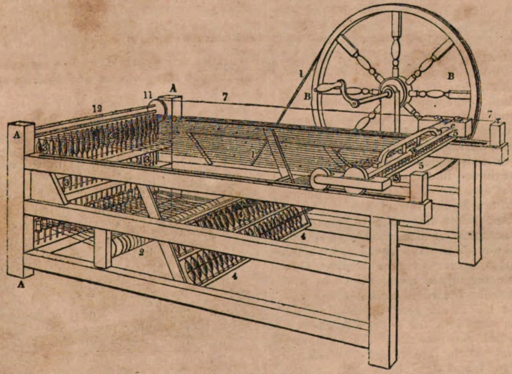
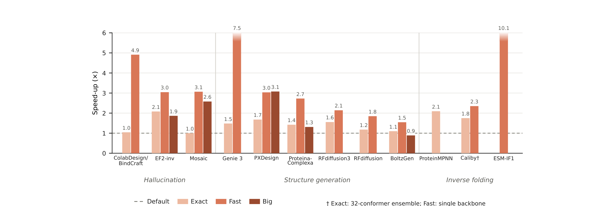
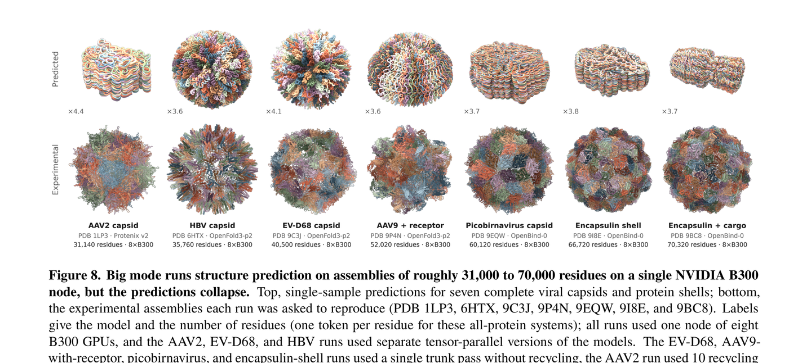
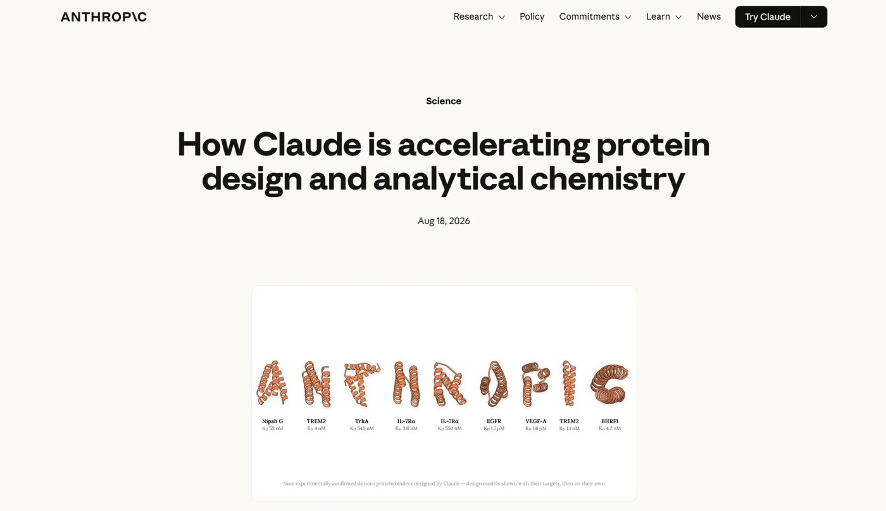

The Spinning Jenny of 2026
Contents
- 1768, the spinners of Blackburn smash the machine
- 4 weeks and 36 implementations
- What actually got compressed is the wall between fields
- The other page of the ledger: the totals went up, and that generation never saw it
- Bottlenecks move, they do not disappear
- "More papers, more ??"
- Where am I, where is the future
May 10, 2026. Gesling Stadium, Pittsburgh. Jensen Huang stood at Carnegie Mellon's 128th commencement and said one sentence to a field of black caps.
Every major technological revolution in history created fear alongside opportunity.
His answer was: do not fear the future, guide it wisely, build it responsibly, and ensure that its benefits reach as many people as possible. The verb in that last clause is ensure.
I only arrived in Pittsburgh in August, so I missed hearing it in person and caught up on YouTube. I stopped at ensure. "Ensure that its benefits reach as many people as possible" is an imperative. It says this is something we have to make happen, not something that happens by itself.
My mind went back 258 years, to a group of people for whom nobody ensured anything.
1768, the spinners of Blackburn smash the machine
Around 1764, James Hargreaves of Lancashire built the spinning jenny. Before it, one spinner tended one spindle. The jenny let one person turn eight at once, later models many more, and it opened the first Industrial Revolution.

Yarn prices began to fall. In 1768 the hand spinners of Blackburn broke into Hargreaves' house and smashed his machines. He fled with his family to Nottingham.
Textbooks usually write this up as ignorance against progress. I prefer to read it as a pricing event. Before 1768, turning fibre into an even thread was scarce, and the scarcity was supplied by a pair of hands trained over many years. After 1768 the price of that skill was set by a machine. The people who smashed it were not failing to understand it. They understood better than anyone what those eight spindles meant.
4 weeks and 36 implementations
Back to this year.
On September 17, Anthropic released a technical report titled Accelerating open-source biomolecular models with Claude. They had Claude optimise inference for open-source biological models, supervised by two scientists working on biomolecular modelling. The report notes specifically that neither had experience in inference optimisation or kernel engineering.
In under four weeks Claude delivered optimised packages for 36 model implementations, covering more than 30 widely used open-source base models across structure prediction and co-folding, protein design, genomics and protein language models. Each package ships three modes: Exact (bit-for-bit reproduction of the original output), Fast (a little numerical precision traded away for speed) and Big (lower peak memory, so larger inputs fit on the GPU).
The numbers are good. In Exact mode the forward pass of 14 structure prediction models was 1.6× faster on average; in Fast mode 13 models averaged 4.1×. On accuracy, pooling 1,925 model–target pairs, the share of acceptable interfaces moved by less than one percentage point in every mode, and not one of those shifts was distinguishable from zero.
Then I got to the design model figure.

ColabDesign/BindCraft, the hallucination design line: 4.9× faster per design step in Fast mode, peak memory down to 0.35× at best.
Supplementary section S2.1 explains how, ordered by contribution. Remove the chunking the upstream code applies above 384 tokens (it was there to save memory). Swap in a fused flash-style attention kernel that never materialises the full attention score matrix. Fuse the triangle multiplication.
I had had the same idea while working on hallucination models. I spent a while reading about FlashAttention and FlashIPA, but it stayed a preliminary sketch, something to pick up once I was properly in a lab.
A little earlier than that, I read the ColabDesign source for the first time in order to modify the model. It was my first contact with JAX. Chat models were not smart enough then to be worth asking, so I worked through the JAX source line by line, hunting for where the masking mechanism lived in a completely unfamiliar codebase. It took me several days.
A year later, that implementation would take about an hour.
What actually got compressed is the wall between fields
The easy thing to miss is the parenthesis about the supervisors: the two scientists do not do kernel engineering.
In those same four weeks Claude also produced a GPU kernel suite called FlashPairformer. At the pair width of 128 used by AlphaFold3 and Boltz-2, its triangle attention is 2.7× faster than NVIDIA's cuEquivariance and its triangle multiplication 1.7× faster; at pair width 256, 2.9× and 3.2×. Those are geometric means over seven input sizes, and it was faster at every size.
NVIDIA has a team dedicated to this.
So what got compressed is not only labour. A protein design researcher who wanted to speed up the models they run every day used to face a whole wall: CUDA, kernel fusion, memory layout, JAX compilation behaviour. The point of that wall was precisely that it filtered most people out. It was not a bug, it was the moat around people like me. I do not do kernels, so there are many people who do not do kernels, so the ones who do are worth something. I spent several days working out how ColabDesign's masking was implemented, so there are not many people in this field who have, so I am worth a little something.
The jenny demolished a wall of exactly this kind. Turning fibre into an even thread took skill in the hands, skill took years, and the years kept people out. The machine arrived, the wall was gone, the yarn was still there, and there was more of it.
One person turning eight spindles. One person running thirty design trajectories.
The other page of the ledger: the totals went up, and that generation never saw it
The macro ledger of the Industrial Revolution really is handsome.
British raw cotton imports: roughly 2.5 million pounds in 1760, 22 million in 1787, 366 million in 1837. Yarn prices fell to about a twentieth. Total employment in cotton textiles rose over the long run, because cheaper goods opened markets, pulled up the industries upstream and downstream, and moved a great many people from the countryside into cities.
This is where the line "in the long run technology creates more jobs than it destroys" comes from. The line is true.
What it leaves out is the time scale.
The economic historian Robert Allen gave the period from 1790 to 1840 a name: Engels' pause. On the Crafts–Harley estimates, British output per worker grew 46% between 1780 and 1840, while Feinstein's real wage index over the same period rose 12%. The profit rate doubled, and profit's share of national income expanded at the expense of labour and land. Only after 1840 did it reverse: from 1840 to 1900, output per worker grew 90% and real wages 123%.
Which is to say that between smashing the machines and the gains reaching ordinary workers lay about two generations.
The same stretch of history contains a second round of machine breaking. The Luddite movement ran from 1811 to 1816, more than forty years after Blackburn. Its participants were mainly weavers, and what they broke was mainly stocking frames and power looms.
Reading what the Luddites themselves left behind, their demands centre on wages, child labour, working conditions and product quality, and they targeted specific machines and specific uses of them. What they opposed was a distribution.
Writing them up as fools who opposed technology is a label later generations applied to save themselves the trouble. When people today talk about resistance to AI, the same label is still being applied, by the same kind of person, to save the same trouble.
The ensure in Huang's sentence points right at this. It does not happen spontaneously. It did not in 1768, and it did not from 1790 to 1840.
Bottlenecks move, they do not disappear
Once spinning stopped being the bottleneck, the bottleneck moved to weaving, which produced the power loom. Once weaving stopped being the bottleneck, it moved to the cotton supply.
Research works the same way. Once running the experiment stops being the bottleneck, the bottleneck moves to deciding what is worth running and confirming whether it is real.
Two symptoms, both underway.
The first is ICLR, which I took part in this round. ICLR 2026 had roughly 19,500 submissions. By the ICLR 2027 abstract deadline it was about 50,000, with later reporting putting it above 60,000 — a figure some reports note exceeds the sum of every ICLR since it was founded in 2013. At conventional reviewing intensity, that stack of papers corresponds to something like 150 person-years of review.
The generation side exploded. The reviewing side did not. Reviewing is verification, and verification is now the bottleneck.
The second symptom is in the same report. On a single H200, in 24 hours, with a prompt of about 1,100 words, no web access, no sub-agents and no human intervention in the design process, Claude produced binders that matched in-silico scores from earlier campaigns with a $10,000 GPU budget (roughly 2,500 H100 hours): median score after 24 hours of 0.785 for Opus 5 against 0.749. The GPU budgets differ by about a hundredfold.


The cost of designing a thousand sequences is collapsing. The cost of confirming which one actually binds is not collapsing in step. That gap is where the value sits for the next few years.
"More papers, more ??"
My original question was whether the surge to sixty thousand papers adds noise or genuine innovation.
I now think the question is badly formed.
After 1768, machine-spun yarn was for a while worse than yarn from a skilled hand. It stopped nothing, because cheapness and volume opened markets that hand spinning could never have opened. Average quality fell and the textile industry won.
So asking about average quality is beside the point. What decides the outcome is something else: whether the mechanisms for filtering and organising can keep up with the volume.
What appeared after 1768 was not better hand-spun yarn. It was the factory system, a way of organising that was equally unfamiliar and equally resented at the time. It organised the flood of capacity.
Faced with sixty thousand submissions, what we need is probably not stricter review either. Stricter is just tightening the knobs on the same mechanism, and that mechanism was designed for two thousand. We need a new way of organising, and I do not yet know what it looks like. Perhaps selection that puts reproducibility first. Perhaps making verification itself a citable output. Perhaps something else.
What is certain is that it will not grow on its own.
Where am I, where is the future
I am not the hand spinner being replaced. The models were already there when I entered this field.
I am not the owner of the machines either. I did not write those kernels.
The closer position is the young apprentice in 1768 who has just learned to work a jenny. The skill his hands spent a few years acquiring has just been devalued, and knowing how to use the new machine has not yet become the new scarcity, because everyone is learning it at the same time. What happens to the apprentice does not depend on how fast he learns. It depends on what new structure the industry grows once yarn gets cheap, and on whether he is standing inside that structure.
The time scale this round should be shorter than two generations. I hope so.
Those 36 optimised packages are open source now. The idea I had meant to pick up was a threshold; it is now a line of pip install and a prompt.
It reminds me of Liu Shengyu's essay, I Had to Bury My Talent in Yesterday. The JAX code I once read line by line is code the next person using it will not need to know either. Underneath Fast mode is a set of kernels I have not read, faster, and numerically sound, and I probably never will read them.
Once a jenny is turning, nobody asks how many years those hands trained.
Originally published in Chinese on WeChat, October 7, 2026, as 2026的珍妮纺纱机.
English version by Yitian Xiao; figures carried over from the Chinese original. Corrections are welcome via an issue.